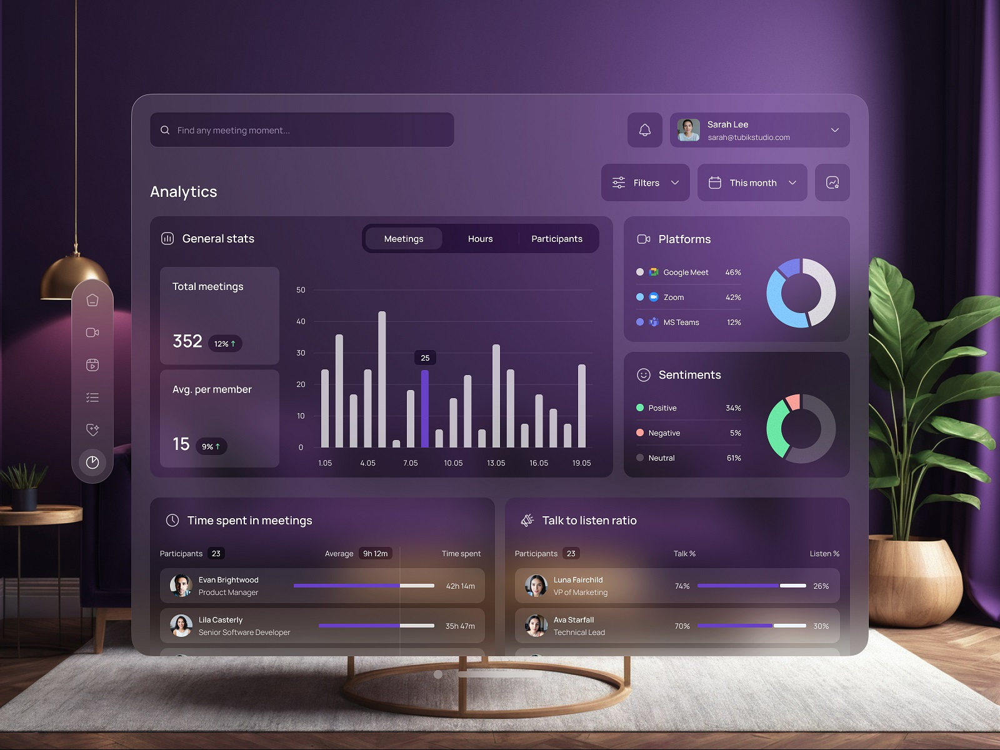

用户界面设计的基本原则
2025-09-04UI 对业务有着切实可见的影响。重视 UI 并非只是表面功夫，它对企业的成功至关重要；许多原则可以归结为“让用户的生活更轻松”。
用户界面设计原则将提升用户的可用性，让他们在使用产品时享受其中的乐趣。将这些原则运用到实践中。
UI 设计原则是什么？
UI 设计原则是旨在创建提供积极、直观和有效用户体验的用户界面的基础指南。这些原则指导设计师做出决策，以提升数字界面的可用性、可访问性和整体满意度。

你应该在设计过程中的每个阶段应用 UI 设计原则，用来创建可直观的、以用户为中心的界面，满足用户需求。以下是如何以及何时应用这些原则：
1、早期规划和概念化阶段
·清晰度和可访问性：从一开始，就应考虑信息架构的清晰度以及设计对所有用户的可访问性。这有助于为易于导航和理解的界面奠定坚实的基础。
·一致性：尽早制定设计准则（例如样式指南或设计系统），以保持颜色、排版和交互的一致性。这将确保整个设计过程中视觉和功能的一致性。
2.线框图和原型设计
·层次结构和反馈：在绘制线框图时，重点关注视觉层次结构，以确保最重要的元素突出。加入反馈机制，例如错误消息占位符或加载指示器，以便为用户提供响应式体验。
·灵活性和效率：对于原型，请考虑简化交互的方法。这可能意味着要包含键盘快捷键、可见提示或方便不同经验水平用户的导航选项。使用这些原则测试不同的迭代有助于优化和改进布局。
3.用户测试和迭代
·应用无障碍原则：无障碍测试确保 UI 适合所有人，包括残障人士。这对于优化颜色对比度、导航路径和文本易读性等方面至关重要。
·反馈：收集用户对界面响应能力的反馈。用户应该确信系统能够以预期的方式响应他们的输入，从而减少困惑并提高满意度。